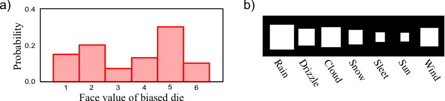
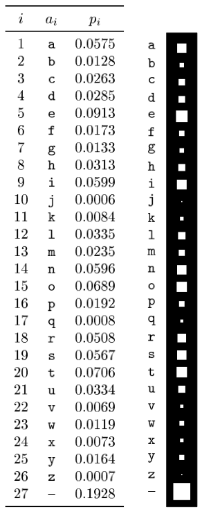
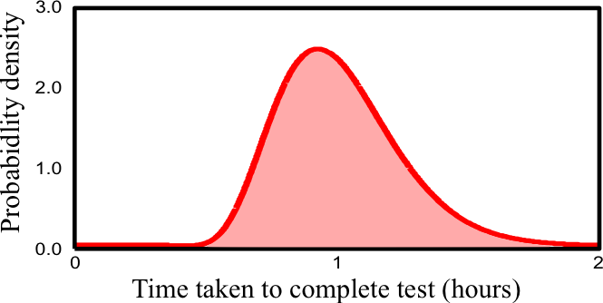
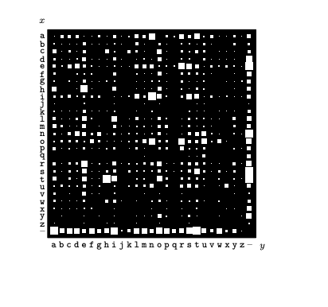
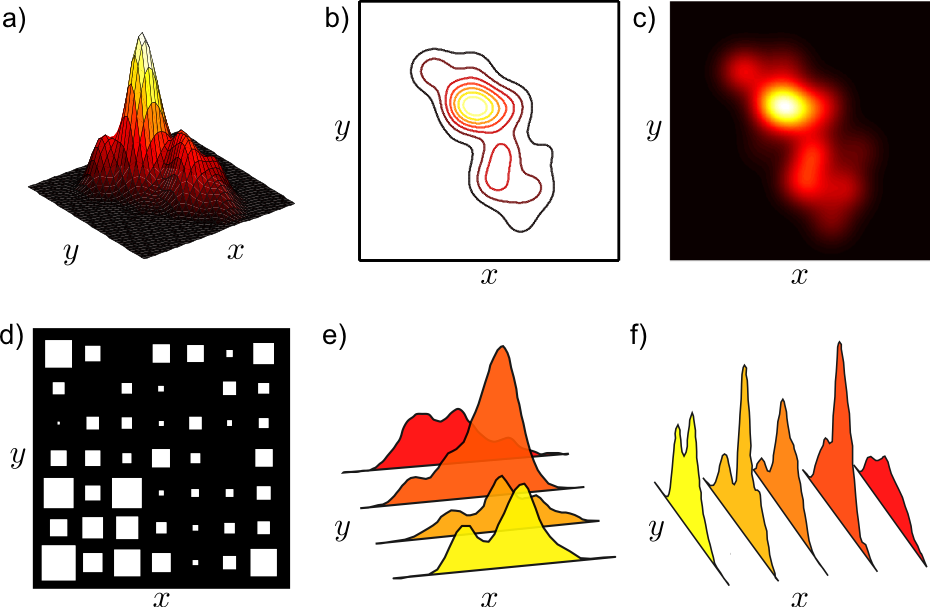
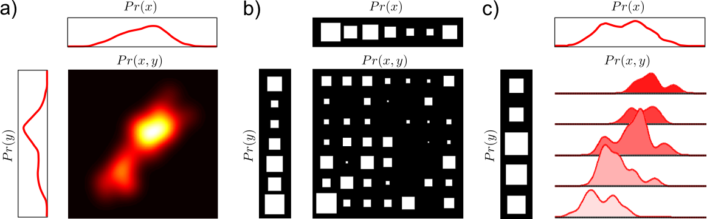
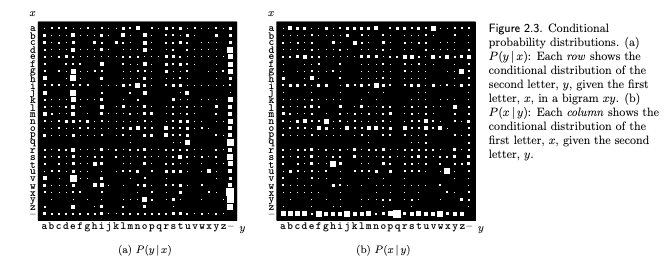
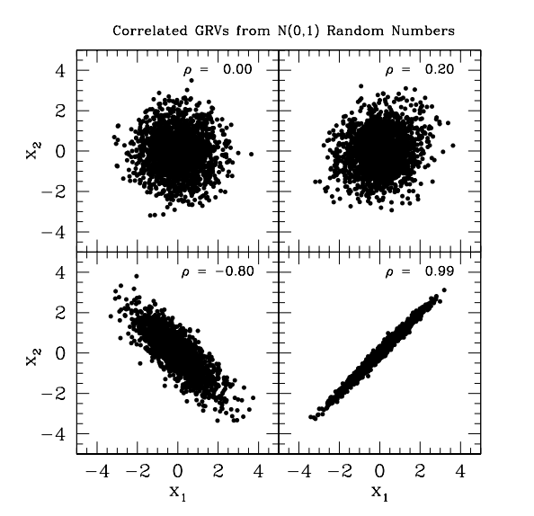

Probability Basics
Contents
Probability Basics¶
Probability Recitation for my classes. Recitation was delivered by my TA Rohit Deepak Phadke.
The whole purpose of probabilistic modeling is to introduce uncertainty into our problem statement. There are three types of uncertainties:
Inherent stochasticity - e.g. impact of wind in self-driving car control systems at moderate to high speed.
Incomplete observability - e.g. sensor imperfections causing loss of sensing information
Incomplete modeling - e.g. models and algorithms that are not implementable to an analog world and need to be discretized.
Probabilities can be used in two ways.
Probabilities can describe frequencies of outcomes in random experiments
Probabilities can also be used, more generally, to describe degrees of belief in propositions that do not involve random variables. This more general use of probability to quantify beliefs is known as the Bayesian viewpoint. It is also known as the subjective interpretation of probability, since the probabilities depend on assumptions.
The three important probabilities that we need to be concerned with in data mining are the joint, marginal and conditional probabilities. The pictures below present some examples that we will go through.
 Discrete probability distribution function (pdf). On the right side is what is called a Hinton diagram where the area of the square represents the probability in a way that the sum equals to 1.0.
 A more complicated discrete probability distribution over the letters of the English alphabet (letter 27 symbolizes space) as measured by reading the Linux FAQ document.
 Continuous probability distribution density function (pdf) - the area under the curve equals 1.0
 Joint probability \(P(x,y)\) distribution over the 27x27 possible bigrams \(xy\) found in this document: https://www.tldp.org/FAQ/pdf/Linux-FAQ.pdf
 (e) and (f) represent joint distributions of discrete and continuous random variables
Sum rule and the Marginal Probability¶
Given the joint what is the marginal probability \(P(x)\) ?
 Extracting the marginal out of the joint
Conditional Probability and the Product or chain rule¶
This is obtained from the definition of conditional probability:
 Conditional probability distribution over the 27x27 possible bigrams \(xy\) found in this document: https://www.tldp.org/FAQ/pdf/Linux-FAQ.pdf
Are \(x\) and \(y\) in the example above independent ?
Multi-variate Gaussian distribution¶
Perhaps the only distribution that is worth knowing and remembering its form is the multivariate Normal as it has widespread applicability in data science.
where where <\({\mathbf x}\) is a real ‘n’-dimensional column vector and \(|\boldsymbol\Sigma|\equiv \operatorname{det}\boldsymbol\Sigma\) is the determinant of \(\boldsymbol\Sigma\).
You can generate correlated Gaussian distributions from white gaussian random variables as shown below. This can be useful in multiple settings. Foe example you can synthesize training examples where there is correlation between features. You can also explain what happens in successive layers of a neural network when a correlated input is propagated through.
 Correlated Gaussians
For a more extensive overview of the Gaussian distribution see here
References¶
For an overview of probability concepts see Ian Goodfellow’s book: